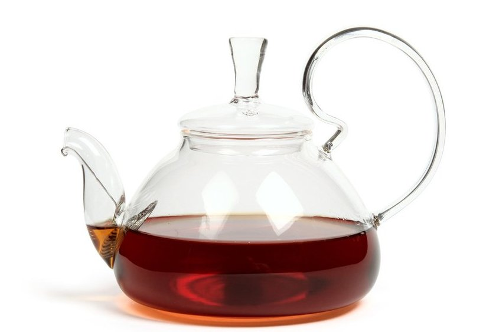

Главная

Чайник из жаропрочного стекла
Преимущество стеклянного чайника, помимо его прямого назначение — заварки чая, является возможность наблюдать за процессом
заваривания различных видов чая, за раскрытием чайного листа и танцом чаинок. Этот чайник, как никакой другой подходит
для завариванием связанного чая. Наблюдение за раскрытием «бутона» связанного чая в прозрачной посуде, превращает
чаепитие в настоящее сказочное действие. Отличным дополнением для такого чайника будет стеклянная подставка-горелка
под чайник.